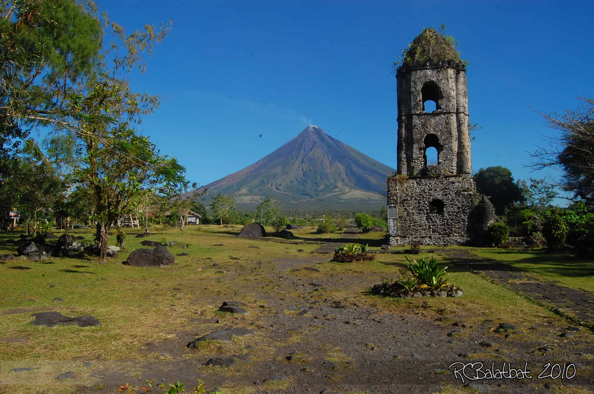
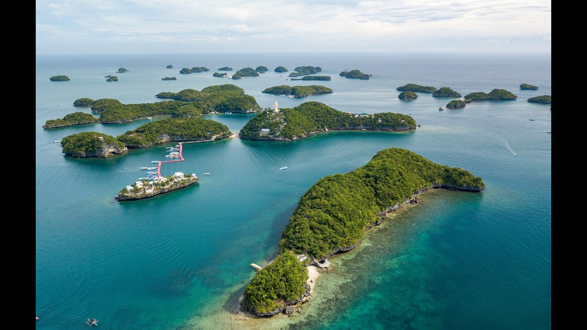
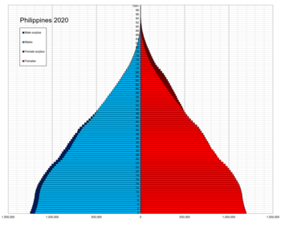
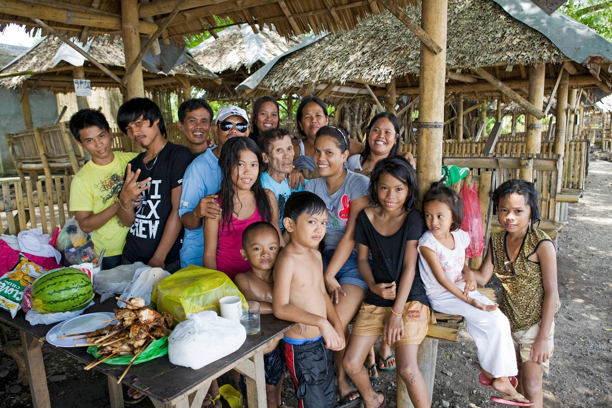

Tourism in the Philippines traces its origins during the ancient times when the first set of people chose to migrate through land bridges,
followed by the other sets of migrations from the Malayan archipelago in the south and Taiwan in the north.
The tourism industry first truly flourished during the late 19th to early 20th century due to the influx of immigrants from Europe and the United States. It was listed as one of the best countries to visit in Asia aside from Hong Kong and Japan, earning the nickname "Pearl of the Orient Seas". The tourism declined during and after the World War II, leaving the country with a completely devastated economy, and a landscape filled with destroyed heritage towns. The second wave of tourist influx flourished in the 1950s but declined drastically during the dictatorship era. After the People Power Revolution, the tourism industry continued to decline due to the domino effect caused by the Marcos dictatorship.
The industry only managed to cope in 1991 and 1992, where 1.2 million tourists visited the Philippines. It afterwards waned again after a decade due to corrupt practices in government. The tourism industry flourished again at the early part of the 2010s under the "It's More Fun in the Philippines" slogan, which was regarded as an international success. The country saw an influx of foreign tourists, with the aid of social media and the creative tagline. Tourism reached its peak in 2015 with 5,360,682 foreign tourists arrivals recorded. The industry continued to grow in 2017, but the growth rate from Western tourists drastically decreased due to the drug war and the declaration of martial law in Mindanao. Nonetheless, the growth continued due to an influx of Asian and Russian tourists.
8,260,913 international visitors arrived from January to December 2019, up by 15.24% for the same period in 2018. 58.62% (4,842,774) of these came from East Asia, 15.84% (1,308,444) came from North America, and 6.38% (526,832) came from other ASEAN countries. The tourism industry was severely affected during the COVID-19 pandemic, when tourist arrivals dropped to only 1.48 million in 2020 due to government pandemic-related lockdowns to control the spread of the virus, and when Super Typhoon Odette ravaged tourism-dependent remote islands, including Siargao, in central and southern Philippines in December 2021. The country was reopened to international tourists starting February 10, 2022, after nearly two years of border closure due to the COVID-19 pandemic.
The Philippines is an archipelago comprised of 7,107 islands in the South China, Philippine, Sulu, and Celebes Seas, along with the Luzon Strait. The topography of the islands is mostly mountainous with narrow to large coastal lowlands, depending on the island. The Philippines is divided into three main geographic areas: the Luzon, Visayas, and Mindanao.
The climate of the Philippines is tropical marine with a northeast monsoon from November to April and a southwest monsoon from May to October. The Philippines, like many other tropical island nations, has problems with deforestation and soil and water pollution. The Philippines' problems with air pollution are especially bad because of large populations in its urban centers.
The majority of Filipinos are lowland Austronesians, while the Aetas (Negritos), as well as other highland groups form a minority. The indigenous population is related to the indigenous populations of the Malay Archipelago. Some ethnic groups that have been in the Philippines for centuries before Spanish and American colonial rule have assimilated or intermixed. 600,000 people from the United States live in the Philippines. They represent 0.56% of the total population. The ethnic groups include Arabs, Japanese, Han Chinese and Indians which form parts of the population.
The most commonly spoken indigenous languages are Tagalog and Cebuano, with 23.8 million (45 million speakers as Filipino) and 16 million speakers, respectively. Another 11 indigenous languages have at least one million native speakers: Ilokano, Hiligaynon, Waray, various Bikol languages, Kapampangan, Pangasinan, Maranao, Maguindanao, Kinaray-a, Zamboangueño and Tausug. One or more of these are spoken as a mother tongue by more than 93% of the population. Filipino and English are the official languages but there are between 120 and 170 distinct indigenous Philippine languages (depending on expert classifications).
The culture of the Philippines comprises a blend of traditional Filipino and Spanish Catholic traditions, with influences from America and other parts of Asia. The Filipinos are family oriented and often religious with an appreciation for art, fashion, music and food.
Filipinos are also hospitable people who love to have a good time. This often includes getting together to sing, dance, and eat. The annual calendar is packed with festivals, many of which combine costumes and rituals from the nation’s pre-Christian past with the Catholic beliefs and ideology of present day.